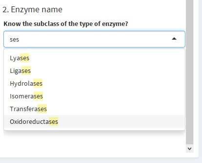
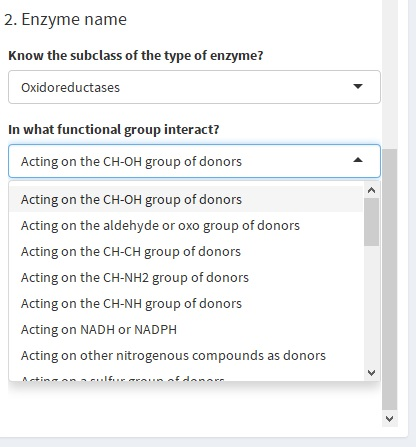
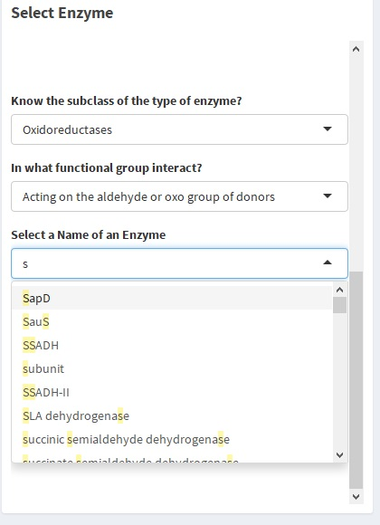
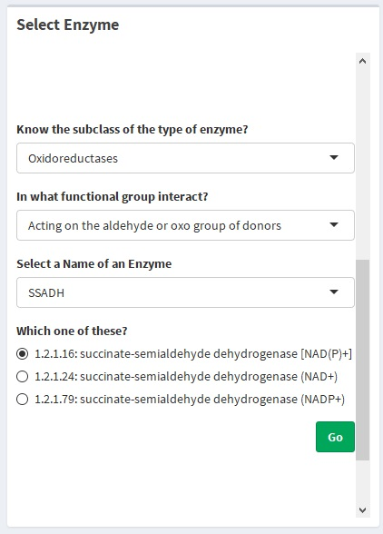
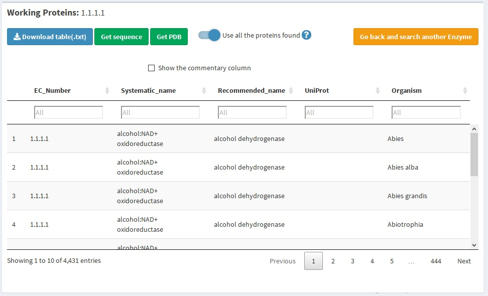
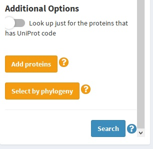
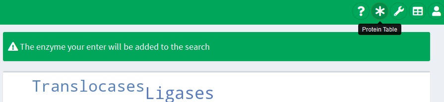
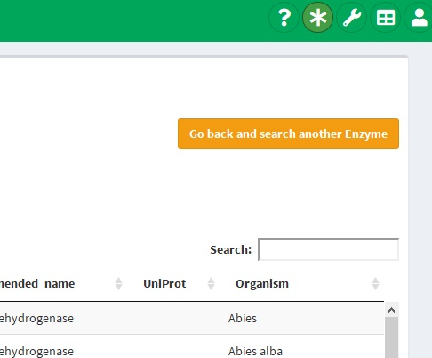
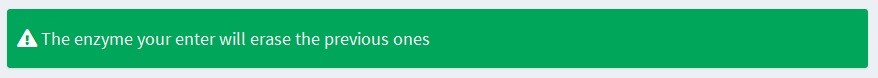
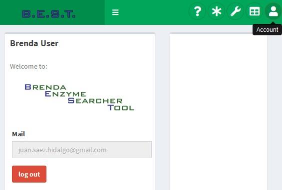

The enzymes are a complex group of proteins, which are essential for most biological processes in living systems. This characteristic gives them great potential in biotechnological applications.
Currently, the most whole enzyme database worldwide is BRaunschweig ENzyme DAtabase (BRENDA), which has 104,000 enzymes names with their functional parameters and other properties. BRENDA allows access to this information. However, the interface is complex and the data is hard to aggregate.
We propose Brenda Easy Search Tool (BEST) a versatile web tool that enables querying enzymes and proteins in the BRENDA database fast and efficiently. This tool allows you to obtain functional parameters and molecular properties from your enzyme query in a user-friendly format. This tool was developed in Shiny R.
To search for data in BRENDA, we need you to accept our GNU Licence and the Brenda enzyme licence as well. Once you accept, we can access to the whole collection of enzymes and obtained the ones you need, and the numerical parameters you request.
To get the enzymes you need, we offer two different kinds of options. These inputs are in the select enzyme section.
Enzymes are classified by the
IUBMB
according to the reaction they catalyze. This corresponds to the
EC Number, which is a four number code, with the first one indicating the subclass
such as oxidoreductases, transferases, hydrolases, lyases, isomerases, ligases and translocases.
The second number indicates the functional group of reaction, the third indicates a specific
type of molecule and the fourth the last
level and the reaction itself. More info:
EC number.
If you know the EC number of your enzyme of interest, indicate it in the input
shown in the next image:
Enzymes have a lot of names that differ depending on the gen codifying it, the reaction, historical reasons and so on. Brenda groups them according to its EC number, however, they are associated with the multiple names in which they are called in literature. This category is shown on the Brenda web page with the name 'Synonyms'.
Due to the length of the list, that contains every synonym of every type of enzyme on the database, these names are separated in subclasses. Then, if you know just a particular name of your enzyme, first you have to know in which of these categories it is:
For the next step, you have to select the functional group that is involved in the catalyzed reaction, such as:
In the following space, you can type the name of the enzyme you know. You can search for the list below, remembering that it is a long list. This selector autocompletes your input and shows the possible names that are registered in the Brenda database, select the one that fits most with the name you know.
After you press the search button, a short list of the possible type of enzyme is going to be shown (it can be just one). The selector shows the EC number and Brenda's recommended name. Select the one you are looking for, press 'go', and go on with the numerical parameter selector.
At this point, a table showing all the organism that has a protein with the same catalytic function defined by EC number, available in Brenda is generated. This table contains the next columns that depend on the enzyme type: EC number, systematic name (this could be empty) and recommended name; and the next columns are related to the organism: UniProt, organism (scientific name) and commentary. This last one is hidden by default, but can be shown selecting the "show the commentary column" checkbox.
After the parameter query is done, the protein table contains a "Literature" column that can be shown clicking the checkbox next to the "Show commentary columns".
The way to proceed after this point is described in "Queries from the organism table" section. In this section, the optional proceeds to have a complex query are described.
If more than just one enzyme type is needed, you can add another EC number to the query. This process can be done virtually indefinitely. To add EC numbers to your organism table (or protein table) look for the "Add proteins" button in the sidebar panel.
After clicking it, you are going to be back at the enzyme section , make sure the welcome panel in the top of the page (just below the toolbar) says " The enzyme you enter will be added to the search" if this is not the case, please go back to the Protein table section (by dashboard menu or by the quick access button in toolbar shown below) and press the "Add proteins" button again.
If all is set, add enzymes to the query the same way the first ones were entered.
If you made a mistake and the EC number enter to the query is not the one you want to. You can erase this query and look for another one by clicking the "Go back and search another Enzyme" in the top/right corner.
In this case, the welcome panel should show:
Sadly, if you had more than one enzymes in the query, all of them are going to be erased.
Log out has the same effect. This is going to erase everything generated on the site. But, this has the advantage that specific tables are going to be saved
